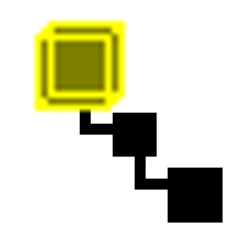
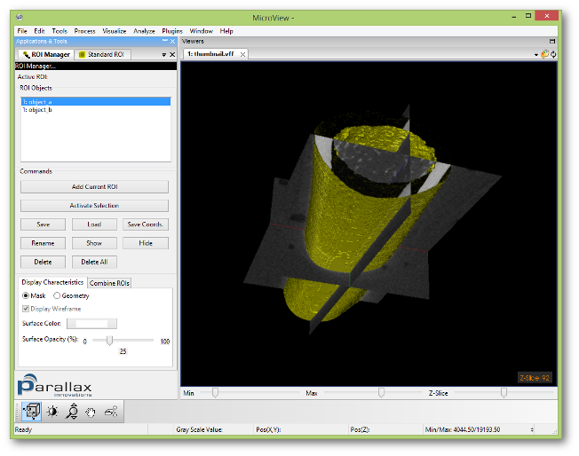
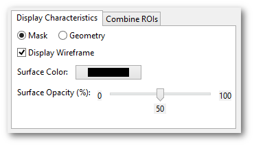
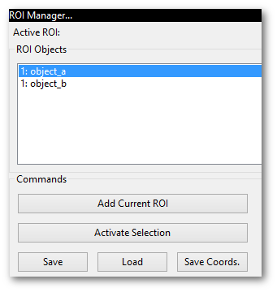
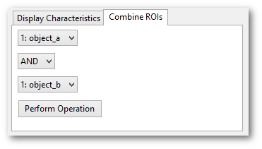

 ROI Manager
This tool facilitates the use of multiple regions of interest (ROI) within MicroView. ROI are unmanaged until added to the ROI Manager. Once added to the ROI Manager, the originating plugin that created the ROI can move on to generate a new ROI, or in fact, can be closed without losing a reference to the ROI object. The ROI Manager can remember, display, activate, and apply Boolean operations to regions of interest.
Adding ROI
To have the ROI Manager remember the active ROI, click Add Current ROI and provide a name. The name you provided now appears in the ROI Objects list. The active ROI is now managed.
To save a ROI to disk, select a ROI from the ROI Objects list and click Save. The ROI Manager uses the VTK Image or vti format to store ROI on disk.
The ROI Manager supports loading of VTK Image files that are created using the save functionality above, as well as the file formats previously supported with the Geometry Manager tool, such as VTK. To load a ROI from disk, click Load and locate the appropriate file.
To delete a managed ROI, select the ROI from the ROI Objects list and click Delete. Click Delete All to remove all ROI from the list.
Displaying ROI

Displaying a ROI does not make a ROI active. That is, displayed ROI do not affect any of MicroView's plugins or the calculations that they perform. To activate a ROI, see the next section "Activating ROI".
To display a managed ROI, select a ROI in the ROI Objects list. Now click Show. You can display multiple ROI simultaneously. To remove the ROI from the display, click Hide.
You have several options to control the visual presentation of the ROI.
To view all displayed ROI as binary masks, choose the Mask option.
To view the displayed ROI as 3D objects, choose the "Geometry"
option.

The Display Characteristics tab contains options that control the presentation of individual ROI. If you are using the "Geometry" display option, then select "Display Wireframe" to view a wireframe mesh of the ROI or de-select to view the ROI as a solid object.
The "Surface color" and "Surface Opacity" fields control the colour and translucency of the ROI respectively. When viewing ROI using the "Geometry" option, the colour and opacity of each ROI can be controlled independently. When viewing ROI using the "Mask" option, the colour of each ROI may be controlled independently, but the opacity affects all of the ROI currently viewed simultaneously.
Activating ROI

The active ROI affects MicroView's plugins. To activate a ROI, select its name in the ROI Objects list and click Activate. Only one ROI can be active. The "Active ROI" field at the top of the ROI manager displays the name of the active ROI. Creating a new ROI supplants the active ROI.
Applying Boolean Operations to ROI
You can apply Boolean operations to existing ROI to create new ROI. The figure illustrates the effects of the different Boolean operations: NOT inverts the ROI; OR combines two ROI; AND intersects two ROI; and XOR gives the ROIs' respective unique points.

To apply a Boolean operation, open the Combine ROIs tab. Select the ROI and the operation you desire to perform. Note that NOT operates on a single ROI. Click Do Operation to execute the operation. The resulting ROI is added to the ROI Objects list.
Visualizing 3D Data
The ROI Manager's 3D display capabilities can be used to create
impressive graphical presentations of data. As an alternative to
MicroView's Volume Rendering plugin, you can display several ROI
simultaneously using the Geometry option. This is particularly
advantageous when using the Movie Maker plugin: rendering the ROI is
faster than the volume rendering.